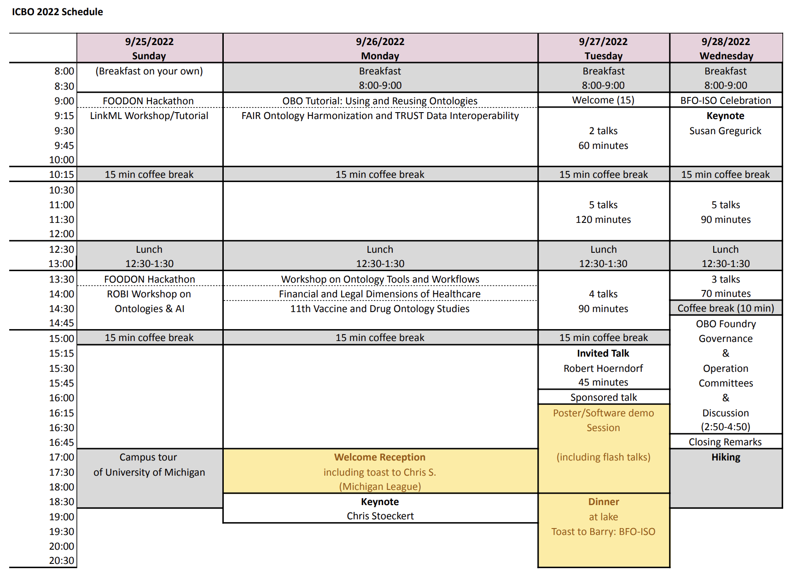

ICBO 2022 Scheduling
This web page includes two sections: (1) Schedule overview, and (ii) Schedule Details.
Schedule Overview (pdf)

Schedule Details
Sunday, September 25, 2022 (breakfast on your own)
Morning
Parallel Sessions
9:00 am – 12:30 pm FOODON Hackathon Morning Session
9:00 am – 12:30 pm LinkML Workshop/Tutorial
10:15 – 10:30 am Coffee Break
12:30 – 1:30 pm Lunch at Michigan League
Afternoon
Parallel Sessions
1:30 – 5:00 pm FOODON Hackathon Afternoon Session
1:30 – 5:00 pm First Workshop on the Role of Ontologies in Biomedical AI (ROBI)
3:00 – 3:15 pm Coffee Break
5:00 – 7:00 pm Campus Tour of University of Michigan
Monday, September 26, 2022
Morning
8:00 – 9:00 am Breakfast at Michigan League
Parallel Sessions
9:00 am – 12:30 pm OBO Tutorial: Using and Reusing Ontologies
9:00 am – 12:30 pm FAIR Ontology Harmonization and TRUST Data Interoperability (FOHTI)
10:15 – 10:30 am Coffee Break
12:30 – 1:30 pm Lunch at Michigan League
Afternoon
Parallel Sessions
1:30 – 5:00 pm Workshop on Ontology Tools and Workflows
1:30 – 5:00 pm Financial and Legal Dimensions of Healthcare
1:30 – 5:00 pm 11th Vaccine and Drug Ontology Studies (VDOS-2022)
3:00 – 3:15 pm Coffee Break
5:00 – 6:30 pm Welcome Reception at Michigan League
6:30 – 7:30 pm Keynote Talk presented by Chris Stoeckert.
Keynote Title: "Striving for semantic harmony across datasets, communities, and real-world data".
Note: The 6th International Cells in Experimental Life Science Workshop, CELLS 2022,
will be held virtually on September 21, 2022. See website for details.
Tuesday, September 27, 2022
Morning Session
8:00 – 9:00 am Breakfast at Michigan League
9:00 – 9:15 am Welcome/Introduction
9:15 – 9:45 am JBMS Journal Track Talk 1
The Environmental Conditions, Treatments, and Exposures Ontology (ECTO): Connecting Toxicology and Exposure to Human Health and Beyond
Lauren E. Chan (30 minutes)
9:45 – 10:15 am JBMS Journal Track Talk 2
A Comprehensive Update on CIDO: The Community-based Coronavirus Infectious Disease Ontology
Yongqun "Oliver" He (30 minutes)
10:15 – 10:30 am Coffee Break
10:30 – 10:55 am
Exploring the Ontology of Pandemic
C. Maria Keet (25 minutes)
10:55 – 11:20 am
Coordinating Coronavirus Research: The Virus Infectious Disease Ontology
John Beverley (25 minutes)
11:20 – 11:45 pm
Classifying Animal Breeds with the Vertebrate Breed Ontology
Sabrina Toro (25 minutes)
11:45 – 12:10 pm
An Ontological Approach to Developing a Unified and Interdisciplinary Framework for Aging
Fumiaki Toyoshima (25 minutes)
12:10 – 12:30 pm
Ontology representation for Cholangiocarcinoma
Anuwat Pengput (20 minutes)
12:30 – 1:30 pm Lunch at Michigan League
Afternoon Session
1:30 – 1:50 pm
The Gaps in the Terminological Representation of the ACORN Social Determinants of Health Survey
Melissa Resnick (20 minutes)
1:50 – 2:10 pm
Using Ontologies to Enhance Data on Intimate Partner Violence
William Hogan (20 minutes)
2:10 – 2:30 pm
An ontology for healthcare systems
Paul Fabry (20 minutes)
2:30 – 3:00 pm
Perspectives on machine learning
Jobst Landgrebe, and Barry Smith (30 minutes)
3:00 – 3:15 pm Coffee Break
3:15 – 4:00 pm Invited Talk:
The coevolution of ontologies and knowledge-based analytics in bioinformatics
Robert Hoerndorf (45 minutes)
4:00 – 4:15 pm BFO/ISO Celebration (15 minutes)
4:15 – 4:45 pm Flash talks for posters/software demos (2 minutes each)
4:45 – 6:30 pm Poster Session
6:30 – 9:00 pm Grill Party & Dinner at Island Park Shelter B
Address: Island Park, 1420 Island Drive, Ann Arbor MI 48105
Note: This is ~ 1 mile walking distance from Michigan League (meeting venue)
Island Park map: https://www.a2gov.org/departments/Parks-Recreation/park-rental/Documents/island%20park%20rec1%202022.pdf
Wednesday, September 28, 2022
Morning Session
8:00 – 9:00 am Breakfast at Michigan League
9:00 – 9:15 am
Introduction of CCBOT 2022: Chinese Conference on Biomedical Ontology and Terminology
Xiaolin Yang (15 minutes)
9:15 – 10:15 am Keynote Talk presented by Susan Gregurick
10:15 – 10:30 am Coffee Break
10:30 – 10:55 am
Ubergraph: integrating OBO ontologies into a unified semantic graph
James Balhoff (25 minutes)
10:55 – 11:20 am
Development of an Image Data Set Class: Its Role in Biomedical Imaging and Neuroimaging Research
Alexander Bartnik (25 minutes)
11:20 – 11:45 pm
Knowledge of the Ancestors: Intelligent Ontology-aware Annotation of Biological Literature using Semantic Similarity
Pratik Devkota (25 minutes)
11:45 – 12:10 pm
Performance Summary Display Ontology: Feedback intervention content, delivery, and interpreted information
Zach Landis-Lewis (25 minutes)
12:10 – 12:30 pm
Environmental Health Language Collaborative (EHLC): a route to environmental health science data harmonization
Anna Maria Masci (20 minutes)
12:30 – 1:30 pm Lunch at Michigan League
Afternoon Session
1:30 – 2:00 pm JBMS Journal Track Talk 3
Identification of missing hierarchical relations in the vaccine ontology using acquired term pairs
Warren Manuel (30 minutes)
2:00 – 2:20 pm
OMOP-2-OPMI: Ontologization of OMOP CDM using OPMI to support clinical data interoperability and analysis
Long Tran (20 minutes)
2:20 – 2:40 pm
An Ontological Representation of Money with a View Toward Economic Determinants of Health.
Matthew Diller (20 minutes)
2:40 – 2:50 pm Coffee Break
2:50 – 4:50 pm OBO Foundry Town Hall (Governance and Operations Committees)
4:50 – 5:00 pm Closing Remarks
5:00 – 7:00 pm Hiking